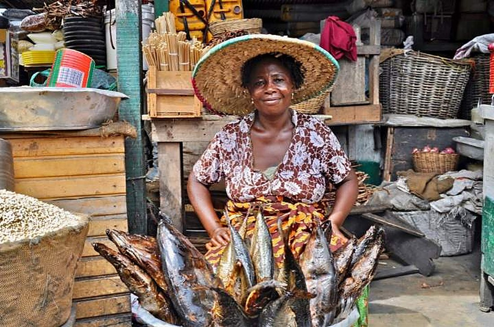

Nigerian produce,ICT and printing,for global trade.
Agricultural exportation, ICT gadgets and solutions, and printing solutions from Five Prime Nigeria Limited, serving African, European, US and Canadian markets.

Why choose Five Prime?
Built for export
Agricultural produce supplied for African, European, US and Canadian markets.
Bulk or small lots
Stocking a market stall or a processing line? Tell us your quantity and we’ll work with it.
Quick answers
Call or message us and get a clear reply on availability, price and delivery.
Many products, one supplier
Cashew, chilli peppers, locust beans, dried fish, shea butter, bitter kola, garlic, ginger, cereal, hibiscus and turmeric, all from a single call.

Five Prime Nigeria Limited is a Nigerian company in Itele, Ota, Ogun State, working across agricultural exportation, ICT gadgets and solutions, and printing solutions. We keep every order simple, honest and on time.
What we supply
Tell us what you need
Pick a product and a quantity.
We confirm
Availability, price and delivery by phone or WhatsApp.
You receive
Fresh produce, ready for your market, kitchen or plant.
Frequently asked questions

Ready to place your order?
A farm business built on trust.
Five Prime Nigeria Limited is based at Onifade Bus-stop, Itele, Ota in Ogun State. We work across agricultural exportation, ICT gadgets and solutions, and printing solutions.

Fresh produce, honest dealing.
We keep things simple. You tell us what you need, we confirm what we have and the price, and we get it to you. Whether you buy for a family, a stall or a factory, you get the same attention.
Built for export
Produce supplied for export markets.
Bulk or small lots
From a few bags to large orders.
Quick answers
Clear replies by phone or WhatsApp.
Three divisions, one company.
Agricultural Exportation
Fresh and dried agricultural produce, raw commodities and processed products for international supply and distribution.
ICT Gadgets and Solutions
Supply and sales of ICT gadgets and equipment, installation of ICT infrastructure, and technology and connectivity solutions.
Printing Solutions
Printing solutions and corporate communication services.
Our vision
To be the leading Nigerian conglomerate driving economic growth by connecting local agricultural excellence to global markets, enabling technological transformation through cutting-edge ICT, and setting the benchmark for printing solutions.


Our mission
At Five Prime Nigeria Limited, our mission is to build long-term trust and drive economic growth by connecting Nigerian agriculture to the world and empowering global trade, digital connectivity, and corporate communication by consistently supplying high-grade agricultural exports, cutting-edge ICT infrastructure, and precision printing services that exceed client expectations.
Where we supply
Everything we supply.
Choose a product or service to request a quote. We confirm availability and price with you directly.
Request a quote.
Fill in the form and send it by email or WhatsApp.
Visit us
Onifade Bus-stop, 9 Abdullahi Close, Itele, Ota 102213, Ogun State
9 Abdullahi Close, Itele, Ota, Ogun StateOpen in Google Maps